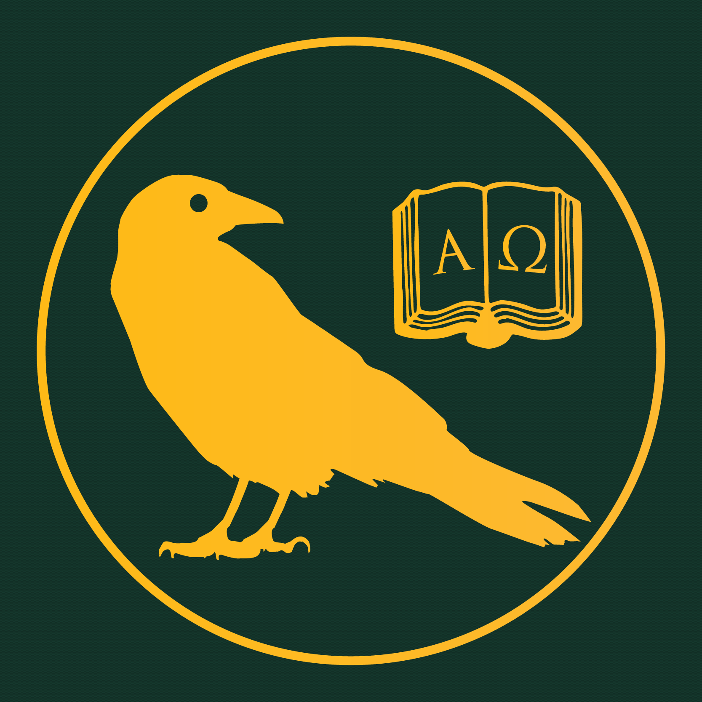

Avalon is dedicated to creating the intimacy necessary for the collective pursuit of truth.
Avalon is building a permanent home for thought and art.
Serious work needs serious company. We help the people doing it find each other — peers, mentors, audiences, patrons. A few good conversations can do more for someone's trajectory than years of standard education.
The institutions that used to do this work — universities, music labels, salons, scenes — have decayed or grown bureaucratic. Capable students whose classes are a drag; professors burdened by their administrations; brilliant misfits a few connections from their work; talented artists with no audience. The talent is there. The contexts aren't.
Avalon's project is to rebuild those contexts. The event is our atomic unit — the right people, in the right room, around the right work. A continuous salon at our house in San Francisco anchors a network we extend through conferences, lectures, a press, and the introductions that turn potential into work.
A home in Twin Peaks, San Francisco, running as a continuous salon since September 2024. Poetry readings, string quartets, acted Platonic dialogues, and evenings devoted to single thinkers — Nietzsche, Hildegard von Bingen, Zhuangzi, Shakespeare, the Greek tragedians. Food, wine, and people on the floor arguing about texts at midnight.
The house is the persistent context — the thing one-off events can never be. Everything else Avalon does extends from it.
We co-host with organisations that share a deep intellectual or cultural focus. Reach out →
The Guthries · Hallsong Media · Plato for the People · The Avalon Amateur Theatre Troupe · Sam Holliday.
Past subjects include Plato's dialogues, Nietzsche, Hildegard von Bingen, Zhuangzi, Shakespeare, and the Greek tragedians.
Plato Night — an acted Platonic dialogue. Avalon Poetry Nights, recurring through the year. Chamber music at the house. Themed salons on a single thinker, from Hildegard to Nietzsche.
Multi-day conferences, each built around a single question and the people most able to advance it — scholars whose work is alive, outsiders the field needs to hear, patrons ready to back serious work, and an audience attentive enough to match them.
First subjects and dates announced this summer.
Conversations on Continuity, our inaugural series. A year of evenings devoted to four questions: what will continue, what will not, how to feel about it, and what to do.
Print essays we commission directly, books that come out of the conferences and lectures, and a forthcoming Avalon journal.
Avalon is the kind of project that has to be underwritten before it pays its own keep. We are seeking $200,000 for our first year of full-time operations: the house, a small core team, the first cycle of conferences, and direct backing for the writers, scholars, and artists in our network.
What's already happening is happening on volunteer hours. The funding moves Avalon from continuous side-project to continuous institution.
The Avalon Institute is a fiscally sponsored project of the Mars Review of Books Foundation, a 501(c)(3) nonprofit (EIN 92-1553880).